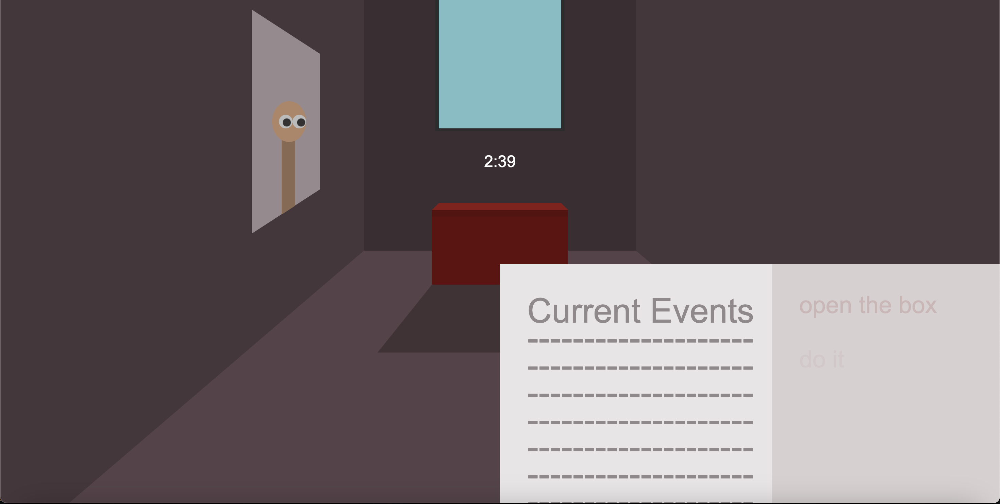
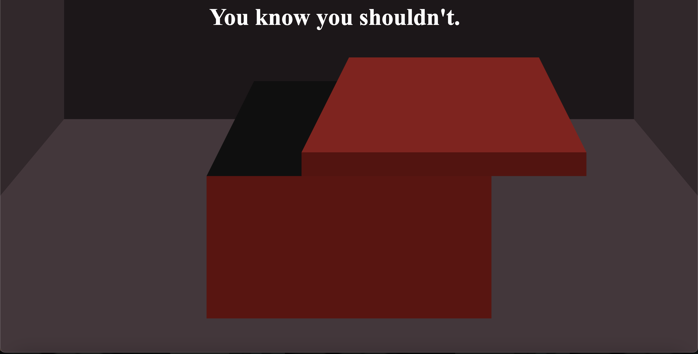

For the storybook assignment I wanted to create a short experience where you are given a book to look after and is told to not touch it. As you wait for the person to return for their box, your surroundings gradually try to lure towards opening the box. If you give into the curiosity, something will emerge from the box and you get caught. Otherwise, you just get thanked for watching the box. I wanted to include a lot of elements but it ended up getting too complicated and I just simplified some of the ideas I had.
One of the ideas I had was having a newspaper you can flip through while you wait for the owner to return. At first it would just display regular current events, but occasionally after looking out the window, messages will appear pressuring you to open the box. One of the issues I encountered early on was figuring out how to apply a hover effect so that the newspaper will pop in and out of he screen whenever you wanted to read or put it away. I initially tried to use javascript to implement this idea but I eventually figured out there was a straightforward animation command in css that allows for this effect:
transition: transform 750ms; /*if user hovers over the element, the element will move up for the user to read.*/ &:hover{ transform: translateY(20px); }
I remade the newspaper class entirely though because I originally made the pages separately and whenever I hovered over one page, the newspaper as a whole didn’t pop up together. I ended up using a grid to make the pages in one class and it ended up working out.
I wanted to apply the secret messages on the pages by having a variable count when you clicked on the window and adjusting the opacity accordingly to appear. It didn’t really work out so I just applied a fade in animation to make the text slowly show up.
I wanted to apply the hover effect to the box itself as well, only though when you hovered your mouse over it, the figures in the paintings would look towards the box in anticipation of what you’re about to do. I couldn’t figure out how to connect the hover effect to the box with the transition to the painting’s eyes so I ended up just animating the eyes to slowly look towards the box over the course of the three minutes.
One other thing I wanted to do was make the box itself clickable and use it to lead into the next parts of the story. I used javascript to add an Event Listener which essentially checked whenever an element with the id ‘myBox’ was clicked on.
document.addEventListener('DOMContentLoaded', function() { document.getElementById('myBox').addEventListener('click', function() { window.location.href = 'decision.html'; }); });
I also used javascript to add a timer function to count down when the box owner would return. I used lengthy code early one to do this which included a button but I ended up simplifying it down and making the timer start when the last introduction dialogue finished fading out.
I think the main thing I struggled with was actually the position and transform commands in CSS. It took me a while to realize that classes inside other classes in html could change the position and rotation of the child classes. I ended up spending a lot of time just trying to get the shapes into the right positions because of it.
Some of the other things I ended up doing that went more smoothly was the moving lid in the second frame of the story, the blinking eyes, and the overlay fade in during both of the endings. All of these used animation which I think added a more engaging effect to the overall experience.
